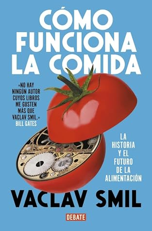

Cómo funciona la comida / How to Feed the World: The History and Future of Food (Spanish Edition)
Reseña por Jorge I. Zuluaga

Ver reseña en GoodReads (necesita cuenta)
La emoción, sin embargo, se disipa a medida que se profundiza en la lectura. Después de unos datos iniciales fascinantes, el libro va derivando lentamente hacia una retahíla de cifras que, si bien son relevantes para el propósito del texto, en demasía se convierten en una carga para quienes acudimos a él con el ánimo de informarnos. A la larga, este tipo de obras puede ser un tesoro para investigadores de la materia, pero resulta una carga pesada para el lector de divulgación.
Esta es, justamente, la razón por la que le doy un puntaje tan bajo. No es que no lo haya leído con fruición, o que no haya aprendido cosas increíbles, sino que con esta calificación busco enviar un mensaje de advertencia. Quienes lo abran pensando que encontrarán un texto informativo, ligero y entretenido sobre nuestra comida, tengan cuidado: prepárense para enfrentar al Smil más hiperñoño de los datos.
En Cómo funciona la comida, Smil hace un recorrido que parte de la historia de la alimentación humana para luego adentrarse en los aspectos que más nos atañen: cuánto podemos cultivar en la Tierra y a cuántos podríamos alimentar, por qué comemos unos animales y no otros, si importa más el desarrollo agrícola o la invención de gadgets tecnológicos, además de la preocupación por la dieta saludable y el impacto ambiental de la producción global.
En los primeros capítulos, el autor nos ofrece un interesante análisis sobre el surgimiento de la agricultura y la domesticación inicial de plantas y animales. Allí no pierde la oportunidad —como es habitual en sus textos— de lanzar una ácida crítica contra autores como Yuval Noah Harari, quienes, en este caso particular, han satanizado el desarrollo de la agricultura catalogándolo como uno de los mayores desastres en la historia de nuestra especie.
Esta reacción es muy característica del profesor Smil. Le encanta demostrar (o creer que demuestra) que otros brillantes autores y autoras, basados en argumentos propios de la historiografía, la antropología, la sociología o la filosofía, están equivocados simplemente porque no tienen en cuenta los números, que parecen ser los únicos aliados de Smil para acceder al conocimiento válido sobre el mundo.
Aunque parece una postura bastante razonable —y yo, como físico, debería alinearme con ella—, debo reconocer que también peca de ser una sobresimplificación. Creer que solo cuantificando fenómenos complejos podemos comprenderlos a cabalidad conduce, generalmente, a lo contrario de lo que se pretende: un entendimiento parcial y excesivamente simplificado de la realidad.
El argumento de Smil en defensa de la agricultura —que es mejor leérselo a él y no a un reseñador de medio pelo como yo— es que sin la revolución agrícola no habríamos sido capaces de alcanzar grados de concentración humana tan grandes y, por ende, sistemas sociales, económicos y tecnológicos tan avanzados. Sus cuentas son impecables, pero sus premisas resultan bastante simples: ¿quién dice que, de haber tenido la oportunidad de escoger, la mayor parte de los humanos habría preferido el desarrollo técnico presente frente a un estadio más básico, pero quizá más cómodo y tranquilo, como el que existía antes de labrar la tierra? Queda claro que los números dicen muchas cosas, pero determinar si la agricultura fue «buena» o «mala» requiere una mirada muchísimo más compleja.
Ahora bien, los datos sobre la alimentación en el resto del libro son asombrosos. Insisto, siempre y cuando se obvien las interminables páginas donde hace cuentas de cuántos kilos de carne o leche se consumen en China, o de cuántos chimpancés pueden vivir y alimentarse en una sola hectárea… ¡puf!
Me sorprendió, por ejemplo, descubrir cómo culturas de todo el mundo dedujeron de forma independiente —y sin saber nada de bioquímica o fisiología— qué plantas debían consumir para obtener los macronutrientes que nuestro cuerpo necesita para sobrevivir: carbohidratos, grasas y proteínas. Estas organizaciones humanas no se limitaron a domesticar cultivos que les proveyeran mucha energía, como el maíz o los tubérculos (abundantes en carbohidratos), sino que siempre encontraron la forma de complementar esa base con fuentes de proteína, como la soja o los fríjoles. Desde una perspectiva biológica parece obvio que los animales sepamos que debemos comer de todo, pero cuando pensamos que la alimentación humana implica a miles de millones de almas, el dato deja de ser irrelevante.
Quedé de una pieza al constatar lo increíblemente ineficiente que resulta la fotosíntesis, al menos desde la perspectiva de la conversión de energía lumínica en energía química disponible para el consumo de animales o embriones de planta. Tendemos a pensar que los procesos naturales (es decir, los subproductos de la evolución) son óptimos, y que la naturaleza es la más sabia de las bioingenieras. Pero resulta que no. Según las cuentas de Smil —que no se basan en estimaciones ligeras, sino en una montaña de literatura especializada—, por cada 1000 calorías que una planta recibe en forma de luz, produce en promedio apenas 1 caloría de alimento.
Otros datos que me volaron la cabeza tienen que ver con la huella hídrica de ciertos alimentos. Creo que ya para nadie es un secreto lo intensiva que resulta la producción de carne de vacuno: según estimaciones de Smil, se necesitan hasta 25 toneladas de agua para producir 1 kilogramo de carne (él lo expresa como 25 000 ton/ton). ¡Verdaderamente impresionante! Pero la sorpresa llega al descubrir que la producción de algunos cultivos es casi igual de costosa. El café, el cultivo más intensivo en agua de todos, exige 18 toneladas de agua por cada kilogramo de grano.
Otro dato contundente: de las casi 900 000 especies de animales que hay en el planeta, los humanos nos comemos a individuos de tan solo 16 grupos (principalmente mamíferos, aves y peces). Sin embargo, justamente por nuestra hambre insaciable, las poblaciones de esos grupos son las más gigantescas. Hay más de 40 000 millones de individuos de los animales que consumimos (excluyendo peces) pisando la Tierra; nuestra panza está poniendo una presión abrumadora sobre los ecosistemas.
En fin. Todavía no sé si, después de este libro, me lanzaré en voladora a comprar el próximo ensayo de Smil. Este ejemplar me dejó con casi 100 razones (sus 100 inmamables páginas finales) para tomar a este autor con mayor cautela. Sin embargo, escribir esta reseña y repasar algunos apartes me ha demostrado que el sacrificio sigue valiendo la pena. Seguiré leyendo a Smil, pero ahora lo haré con una actitud más realista, a sabiendas de que en algún momento naufragaré entre sus cifras solo para poder saborear el resto de cosas buenas que siempre esconden sus textos.